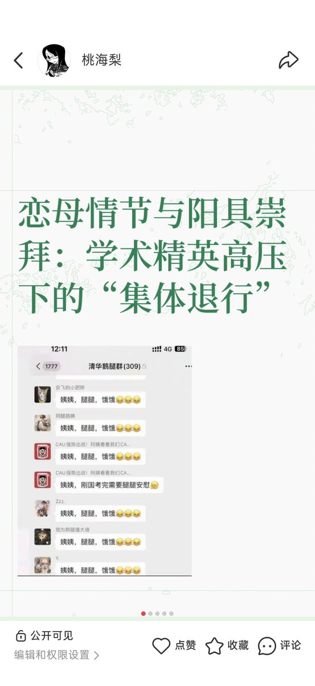
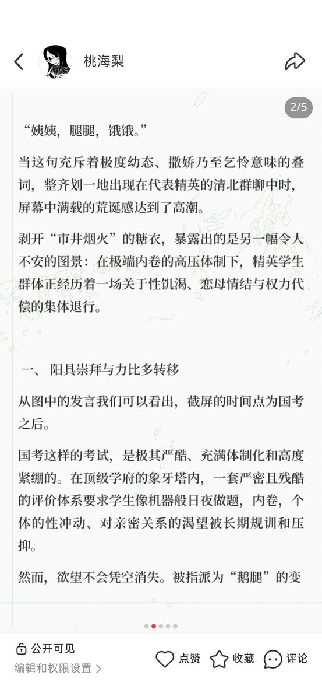
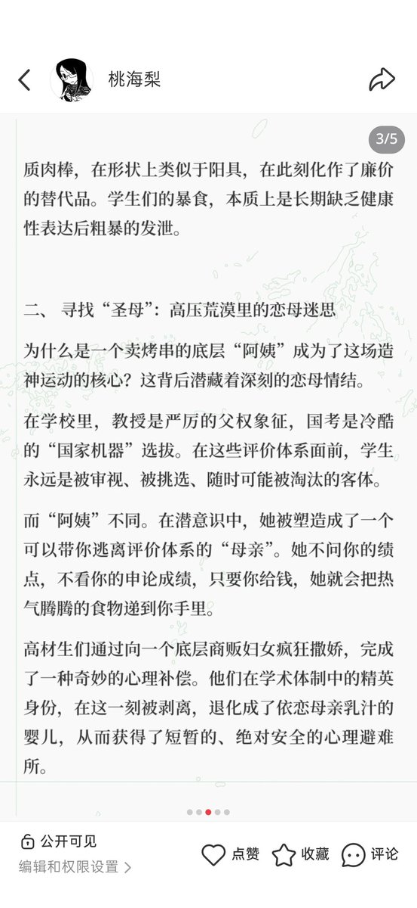

安。
@ansiyao520
一个尴尬的事实是理论分析出的结果往往需要若干年的人生经历跟踪才能验证它自身。而在这期间主体也不是完全静止不动的，会接受或被接受各种各样的“教育”，往往最后那个不可接受的结果会被主体以一种歪歪扭扭的方式缝合。所以精神分析其实有它的局限性。它只是一种（分析人精神的）工具。如果没有目的地使用它，大概只能生产出一些供人智力享乐的谈资。因而它就变成一种无用的语言货币。让人读了哭笑不得。



朝三爱
@josana3xluv
“姨姨，腿腿，饿饿”如何体现恋母情结和阴茎崇拜的双重性 https://t.co/LeRcDeU3Uk